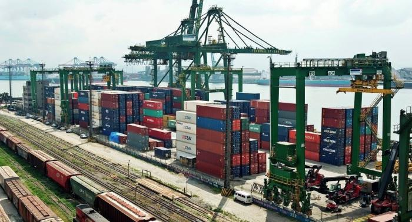

.png)
2018 yılının ilk ayında maden ihracatı, geçen yılın aynı dönemine göre yüzde 19,36 artarak, 391,5 milyon dolar olarak gerçekleşti. Ocak ayında doğal taşta değerde yüzde 17,38 miktar bazında ise yüzde 24,79 artış kaydedildi. Diğer madencilik ürünlerinde ise artış oranı değerde yüzde 20,63 olarak gerçekleşti.
Ocak ayı ihracatında pek çok yeni ülke pazarı yer alırken, geçen sene düşük miktarlarda ihracat gerçekleşen, Burkina Faso, Cibuti, Moldavya, Somali, Kırgızistan, Kongo, Tacikistan, Dominik Cumhuriyeti, Mozambik, Gine, Honduras, Hong Kong, Arjantin, Lübnan, Ukrayna, Slovenya, Zambiya, Peru, Macaristan, Bahreyn, Yeniz Zelanda, İrlanda, Karadağ, Maldiv Adaları, Özbekistan, Angola, Malta, Sudan, Bosna-Hersek ve Afganistan’a olan ihracatta çok yüksek oranlarda artışlar gerçekleşti.
2017’nin ocak ayında maden ihracı olmayan Svaziland, Grenada, Senegal, Benin, Bolivya, Trinidad ve Tobago, Filipinler, St Kitts ve Nevis, Uganda, Kamerun, Aruba, Dominika, Togo, Trakya Serbest Bölgesi, Papua Yeni Gine, Ruanda, Gambiya ve Guyana’ya bu yılın aynı döneminde ihracat gerçekleşti.
En çok maden ihracatı yapılan ilk 20 ülke içinde yer alan Hollanda, Almanya, İspanya, Avusturya, Hindistan ve Suudi Arabistan’la ihracatta geçen yılın aynı dönemine göre düşme yaşanırken, Belçika, Avustralya, Güney Kore Cumhuriyeti, Kanada, İsveç, İngiltere’ye maden ihracatı arttı. Ayrıca, Portekiz, Singapur, Nijerya ve Meksika, Ocak ayında Türkiye’nin pazar payının çok ciddi olarak artırdığı ülkeler arasında yer aldı.
Doğal taş ihracatı ise Ocak ayında yüzde 17,38 artışla 150,9 milyon dolar olarak gerçekleşti. En yüksek doğal taş ihracatın gerçekleştiği ilk 10 pazar ise Çin, ABD, Hindistan, İsrail, Suudi Arabistan, Irak, Fransa, Ürdün ve Suriye oldu.
2018 yılı Ocak ayında metal maden cevherlerinin ihracatı ise bir önceki yılın aynı dönemine göre yüzde 52,7 artarak 138,9 milyon dolar olarak gerçekleşti.